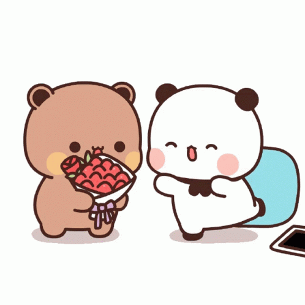

Happy Birthday Amor Silly
Hello amor cute, this time my gift is not the best one but i will take you in a small trip in our cute relationship, are you ready?
First Picture
Yes, you remember this picture?, well i remember perfect the feel i got in this picture, was like this girl is pretty but is not the most pretty but is cute but is silly... was a feeling litle bit weird, but i didnt stop to see your picture for long time.
First calls
Im sure you can remember the first callas we had, was litle bit chaotic but cutes, because we couldnt understand a lot the each other,however i was trying in really understanding you, but same when we start to call in really you were the first gilr make videocall a lot in my life, so with the time i lost the embarrasing to show my face front of you, this picture show a lot my silly moment with you.

First dates
I can not forget the first dates we had, was a mixed of feelings, specially because in one of those i was so wet, yeah was a funny moment but i was sick maybe haha, cute moments
Silly onion BB
Like a good famous writer say, " nothing good is forever " or was something similar?, i dont know. But sadly you had to back to your country, but i wanted you stay with me, however, you had to back :c , that was sad, i remember you said: "can i join to your luggage?" or " Brush your teeths daily", that phrases in really broke my heart, but you left with me our " child ", our child who i tried care a lot, but i couldnt do a lot. But right now is so stronge, the first pictures of our silly onion.

Second time you arrive!
Magic.
Yes... Magic!
OK OK OK, dont get mad bb amor...
MAGIC!!!
OK in really the 2nd time you come, the first time i saw you, was one of the moments more magic in my life, i saw you super pretty, you in really look like a pretty model, oh my godnes!, our 2nd trip was more short but we got super good picture, do you remember some of those pictures amor cute?
One of my favorite pictures
Our annyversary
sadly we dont have memories in real life of our annyversary, and was sad too because i would like we have a pretty date with you, but i just remember that you are a wonderfull person, here some pictures of us amor cute
Our last trip
Our last trip was few weeks ago, and i still remember you amor, thanks for came in my birthday and give me a good happy day, usually i dont like my birthday but you made my birthday will be happy, we had some issues but everytime im with you i feel more calm and happy, thanks for give me the chance to become your boyfriend, i love you amor. This time i met your silly monkey son too, he is like a monkey in really!, but he is in really a good son, i hope our happy family become good with the pass of the time amor bb. i love you, today and forever.
Thanks amor
I know im not the best developer in the world, im only a noob now, but i hope you like this small gift i made for you, thanks for everything, and thanks for all in the future, i love you today and forever amor.
From your silly boyfriend, the super silly Tedd boyfriend.
